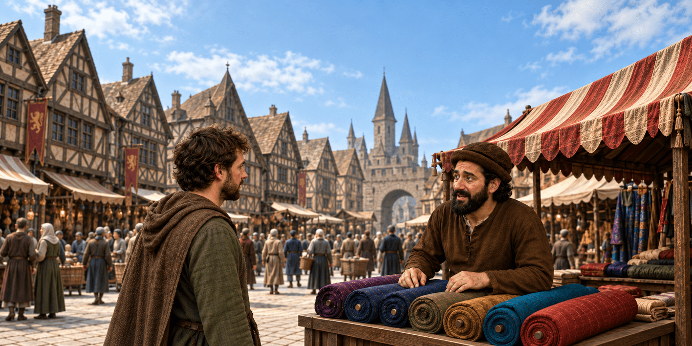
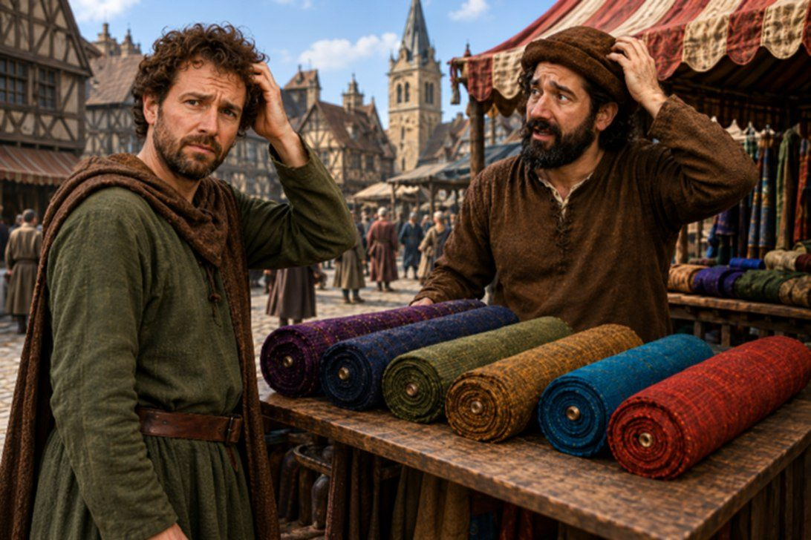
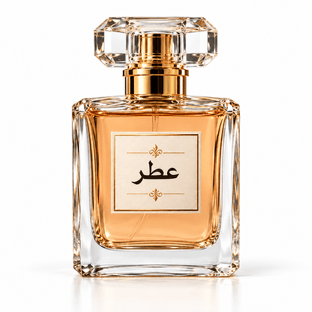
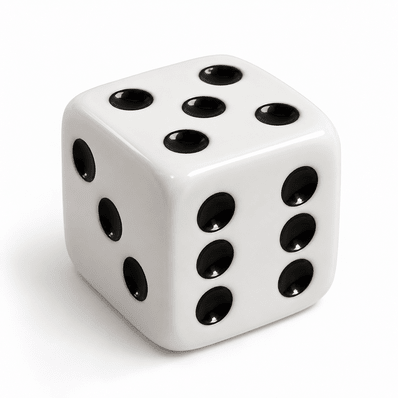
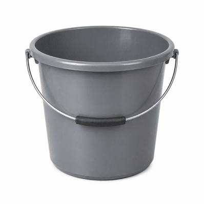
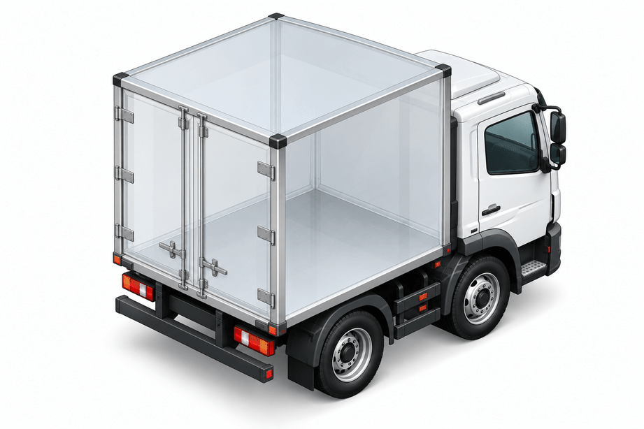

اختاروا من سيرافقكم
اختاروا شخصية
القياس في الماضي
كان الناس في الماضي يستخدمون الذراع لقياس الأشياء المختلفة.
اقرأوا القصة المصورة. ما المشكلة التي تنشأ عن استخدام وحدة قياس الذراع؟

أعطني ذراعًا*
واحدةً من القماش
*الذراع: الجزء الممتد بين المرفق وراحة اليد في جسم الإنسان
ذراع
الملك
ذراع
أبي
ذراعي
أنا
ذراع من؟
ذراع الملك؟
ذراع أبي؟
ذراعي أنا؟

؟
كيف يمكن معرفة ذلك؟
في الماضي، كانت أماكن مختلفة في العالم تستخدم وحدات قياس مختلفة.
ونتيجة لذلك، صار من الصعب التجارة، ومقارنة النتائج، وتبادل المعرفة.
في عام 1795، قررت فرنسا:
"دعونا نتفق على نظام قياس موحّد يخدمنا جميعًا!"
هكذا وُلد النظام المتري:
نظام قياس يستخدم وحدات قياس معروفة حتى اليوم (مثلًا: المتر، واللتر، والغرام).
اليوم، تستخدم جميع دول العالم تقريبًا النظام المتري، باستثناء 3 دول:
الولايات المتحدة الأمريكية
ليبيريا
ميانمار
هناك أشياء كثيرة تُقاس بالنظام المتري.
في هذه الوحدة سنركز على الحجم.
لكن ما هو
الحجم أصلًا؟
ما هو الحجم؟
الحجم هو الحيّز الذي يشغله جسم صلب، أو سائل أو غاز.
-
صلب
-
سائل
-
غاز
أهلًا وسهلًا بكم في سوبرماركت الأحجام!
هنا سنتعرف على
وحدات قياس الحجم
انقروا على كل النقاط لاكتشاف حجم المنتجات، وبأي وحدة قياس تُقاس، ومتى نستخدم هذه الوحدة.
اسحبوا إلى كل عنصر وحدة الحجم الأنسب له



كيف نقيس الحجم؟
توجد عدة طرق لقياس الحجم.
يعتمد الاختيار بينها على حالة المادة وشكل الجسم.
انقروا على البطاقات للتعرف على طريقتَي قياس:
قياس حجم جسم هندسي
قياس حجم سائل
كيف نحوّل من وحدة قياس إلى أخرى؟
في مصنع لتصنيع الألعاب، يتم تعبئة شحنة من مكعبات اللعب.
مكعبات بحجم 1 سم³ لكل منها > تُعبَّأ في صناديق بحجم 1 لتر > وتُحمَّل على شاحنة بحجم 1 م³.
كم مكعب لعب بحجم 1 سم³ نحتاج لملء صندوق سعته 1 لتر؟
اضغطوا على المكعب حتى يمتلئ الصندوق (في كل ضغطة ستُضاف إلى الصندوق طبقة من 100 مكعب).

1 سم³
1 لتر
1 م³
1 لتر = 1000 سم³
أو 1000 مل
(10 × 10 × 10 = 1000)
الآن، سنكتشف كم عدد علب الـ 1 لتر التي تسعها شاحنة حجمها 1 م³؟
انقروا على الصندوق حتى تمتلئ الشاحنة (في كل نقرة تُضاف إلى الشاحنة طبقة من 100 صندوق)
1 سم³
1 لتر(1000 سم³)
1 م³
1 م³ = 1000 لتر
(10 × 10 × 10 = 1000)
هكذا نُجري التحويل بين وحدات القياس المختلفة:
1000 ÷
للوحدة الأكبر
x 1000
لوحدة أصغر
1000 ÷
للوحدة الأكبر
x 1000
لوحدة أصغر
هيا نجرب: إذا حوّلنا 10 لترات من الماء إلى مل، أو سم³، أو م³، ماذا سنحصل عليه؟
اسحبوا الدلو الأزرق نحو كل واحد من الدلاء البيضاء واكتشفوا.
القياسات الدقيقة للحجم توفر بيانات كمية. هذه البيانات هي أدلة علمية.
في العلوم، لحسم الخلاف، لا يُعتمد على الآراء الشخصية.
يُستخدم الدليل (البيانات) لتبرير الادعاء وبناء حجة علمية موثوقة.
ما هي الحجة العلمية؟
عندما تريد العالِمات والعلماء (وأنتم أيضًا!) إقناع الآخرين بأن ادعاءً علميًا صحيح، لا يكفي أن يقولوا "هكذا هو الأمر".
يجب تقديم حجة علمية، تستند إلى 3 أجزاء.
انقروا على كل جزء لقراءة ما يتضمنه.
جملة يمكن الجدال
حول صحتها.
بيانات أو نتائج من تجربة أو ملاحظة،
تدعم الادعاء أو تدحضه.
الشرح الذي يوضح سبب دعم الأدلة
للادعاء أو دحضه.
أمثلة على الحجة العلمية
اختاروا مثالًا واكتشفوا كيف تُبنى الحجة العلمية من ادعاء وأدلة وتبرير.
اقرأوا الجمل الثلاث التالية التي تتناول تأثير ارتفاع درجة حرارة الماء في البحيرة، وأجيبوا على السؤال.
أ. تتكاثر الطحالب الخضراء المزرقة بشكل أسرع في المياه الدافئة. وعندما تغطي سطح الماء، تحجب الضوء وتضر بعملية التمثيل الضوئي للنباتات الأخرى، مما يؤدي إلى انخفاض كمية الأكسجين في الماء.
ب. أدى ارتفاع درجة حرارة المياه في البحيرة إلى موت الأسماك.
ج. عندما ارتفعت درجة حرارة المياه، تكاثرت الطحالب الخضراء المزرقة بسرعة وغطّت سطح الماء، وانخفض تركيز الأكسجين المذاب بشكل حاد، ووُجدت أعداد كبيرة من الأسماك النافقة.
أي من الجمل التالية يعرض "الادعاء" في الحجة؟
أمامكم حجة علمية تقارن بين كتلة كرتين، غير أن الجمل الثلاث التي تتكون منها قد اختلطت.
اسحبوا كل جملة إلى المكوّن المناسب: طرح (ادعاء)، أو دليل، أو تبرير.
ماذا بقيَ عالقًا في عقولنا؟
سؤالان بسيطان للإحماء قبل أن نتقدم
أشيروا إلى جميع وحدات القياس التي تقيس الحجم من القائمة التالية:
أكملوا: